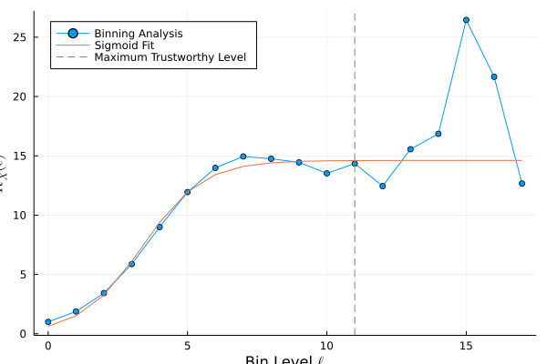
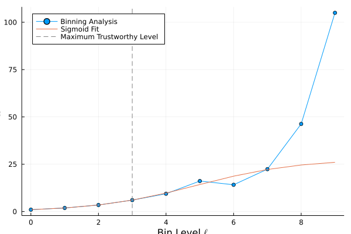

Why use a Binning Analysis?
As described in Markus Wallerberger (2019), Vinay Ambegaokar, Matthias Troyer (2010), Tony F. Chan, Gene H. Golub, Randall J. LeVeque (1983), Carsten Bauer (2020), and James Gubernatis, Naoki Kawashima, Philipp Werner (2016), the presence of correlations in a data stream generated in Markov Chain Monte Carlo simulations renders any measures of error severely underestimated.
Theoretical background
The naive approach is to calculate the mean and the variance of the mean, var_of_mean, for a given data stream $X$. For uncorrelated data, this becomes
\[\begin{aligned} \mathtt{mean}(X) &= \frac{1}{M} \sum_{i = 1}^M x_i \\ \mathtt{var\_of\_mean}(X) &= \frac{1}{M(M-1)} \sum_{i = 1}^M (x_i - \mathtt{mean}(X))^2. \end{aligned}\]
Fortunately, in the presence of correlations, the mean doesn't change. Unfortunately, the var_of_mean does. Indeed, one can show that it's given by
\[\mathtt{var\_of\_mean}(X) = \frac{1 + 2\tau_X}{M(M-1)} \sum_{i = 1}^M (x_i - \mathtt{mean}(X))^2,\]
where the as shown in the Figure within the Accumulator type hierarchy. Clearly, the uncorrelated var_of_mean is just increased by a factor of $R_X \equiv 1 + 2\tau_X$, where $\tau_X$ is defined as the integrated autocorrelation_time of the data stream. The binning analysis provides a fast as an O(N) method for calculating the autocorrelation_time. It's also cheap, only requiring O(log N) in RAM. For those who are unfamiliar with the term, normally one would calculate $\tau_X$ by
\[\tau_X = \sum_{i = 1}^M \sum_{i < j} \left[ x_ix_j - \mathtt{mean}(x)^2 \right],\]
which is an O(N^2) summation and can suffer from numerical instabilities.
As one performs pairwise means in each binning level to construct the next highest, and then calculates the var_of_mean for each level, one can see that it rises and then eventually saturates around a particular plateau value. Normalizing by the original var_of_mean calculation assuming the data stream is uncorrelated, one can then calculate $R_X$ in the $\ell^{\rm th}$ binning level as
\[R_X(\ell) = \frac{\mathtt{var\_of\_mean}(X^{(\ell)})}{\mathtt{var\_of\_mean}(X^{(0)})} = \frac{ m^{(\ell)} \mathtt{var}(X^{(\ell)}) }{ \mathtt{var}(X^{(0)}) },\]
where var is the normal variance and $m^{(\ell)}$ is the bin size, or the number of original data values accumulated into a single data point at the $\ell^{\rm th}$ level.
Visualizing a Binning Analysis
The final result of the binning analysis, for sufficiently long data streams, will be to see a sigmoid-like curve:

For insufficiently long data streams, we do not expect a plateau, as shown in the following case:

Indeed, we have actually chosen the sigmoid, as its inflection point is easily calculable. If the Maximum Trustworthy Level is less than the fitted inflection point, then our binning analysis says no plateau was found, and by default it returns the maximal value of $R_X$.